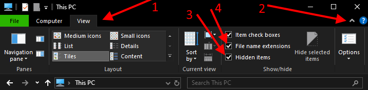
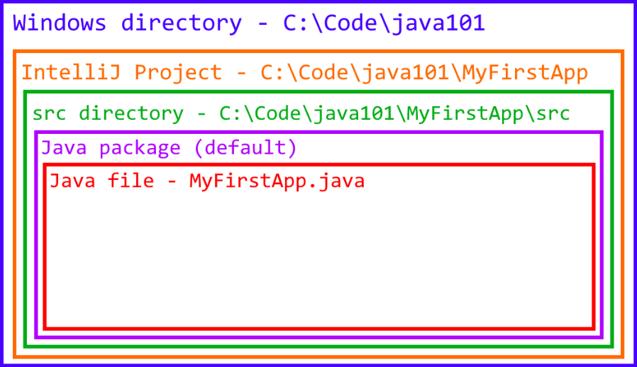
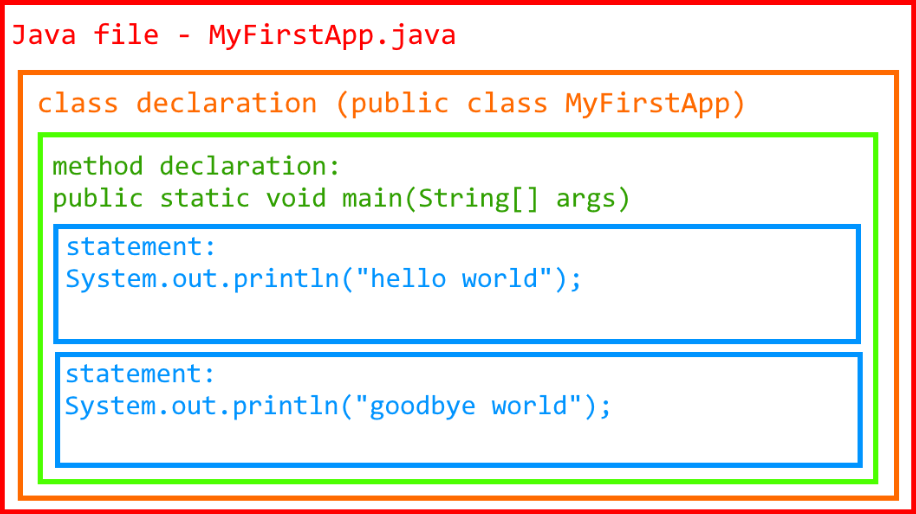

2.1 - Directory and File Structure
In the first chapter, we saw how to create a new project in IntelliJ and
print "hello world". In doing so, we overlooked a
lot of the details in-between, which we will review. Before we start
coding anything else, we should have a basic understanding of the
different layers in the hierarchy.
Directories (Folders)
Within your operating system (Windows, Mac, Linux), you have directories. A directory is a computer storage location that can store files and other directories. These help to better organize your data, especially when programming. The term directory can be used synonymously with folder. Directory is the technical term, and folder is a general term. These terms may be used interchangeably throughout this book. While a directory is technically a special kind of file, it does not store data in the same way a 'normal' file would. It holds information about the directories and files inside it, as well as metadata such as date created.
Consider the file path C:/Users/Bob/data.txt. It contains
two directories, Users and Bob.
C is a storage disk, and data.txt is a
text-file. Directories are separated by slashes, typically forward
slashes (/) for UNIX based systems, and backslashes
(\) for Windows systems. Modern versions of Windows should
support either type. Overall, forward slashes are the most common
directory separator.
Files
A file stores data as a sequence of bits (0s and 1s).
Files can have file extensions to inform users and other
programs how to interpret the file content. While all files hold binary
data, there are two broad categories of files: binary and text.
Binary files store data that cannot be easily
understood as plain text, such as a .exe or
.png file. Text files store data that
can be easily understood as plain text, and are edited as plain
text. File types such as .txt, .html, or
.java are all plain-text files.
When we write Java source code, we are editing a plain-text file ending
with .java. The java compiler compile it into a
.class file, which is a binary file that is
mostly unreadable. The JVM (Java Virtual Machine), however, is
specifically designed to read and execute .class files.
Sometimes you will hear the term binaries, meaning multiple
binary files. Binaries are generally larger than plain-text files.
Plain-text files are used for writing source code, and are usually very
small. Even 1,000,000 lines of code might only take up 50 MBs
(megabytes).
Enable Hidden Items (Windows)
In Windows, the default behavior in File Explorer is to hide file extensions and hidden items. As a developer, it is unlikely that you will want this. To change this in Windows 10, open File Explorer and follow these steps (as shown in the image). I also recommend you enable file extensions
- Click View
- Expand Options
- Click
Hidden items - (Recommended) Click
File name extensions

IntelliJ Project
A project in IntelliJ is a directory that contains a
.idea directory, which mostly stores how your project is
locally configured. Rarely will we need to directly edit any files in
.idea.
IntelliJ Modules
When a new project is created, a module with the same name is also
created. This is indicated by the *.iml file. These are not
to be confused with Java modules (a more advanced topic). Modules can
also contain more modules, and we will use these later on to have
multiple "projects" (modules) within a single base project.
For now, we will just use the default module.
Each new module automatically comes with a sources root called
/src, which is short for source. This is where we
will write our source code.
Packages
Java has packages, which are essentially directories for your code. In fact, a package's name must match the corresponding directory's name. We will learn more about packages in a later chapter. For now, we will use the implicitly defined default package.
Java Files (.java)
You have already seen a Java file when running the Hello World program.
A Java file is what contains Java source code, such as
System.out.println(). All Java files must go inside a
package, and the default package counts.
The most important thing to know about Java files is
that the file name must match the class name (excluding the
file-extension, which must be .java). For example,
public class HelloWorld { ... } must go inside
HelloWorld.java, and
public class Example { ... } must go inside
Example.java.
Fortunately, this is rarely an issue you will encounter inside an IDE like IntelliJ, as creating a new class will automatically name the file correctly. But, if you manually try to rename your class (or file), you will have an error if both names don't match. Later on we will see how to properly refactor names in IntelliJ, which will automatically fix both.
Class Declaration
Near the top of the Java file, you will have something like
public class Example. This is declaring a class named
Example. After that, we open a set of curly braces
{ } to write more code inside. Currently the only code we
have seen inside is the main method.
Methods
Classes can contain multiple methods. So far, we have only seen the main method:
public static void main(String[] args) {
System.out.println("hello world");
}
In a few chapters we will create more methods, but until then
all of our code will go inside
public static void main(String[] args). We will focus on
learning to write meaningful statements first.
Statements
Methods contain statements. A statement tells
your program to "do something". This could be "print
hello world", such as with
System.out.println("hello world");. In Java,
all statements end with a
semicolon (;). A common error for new programmers
is to forget the semicolon. IntelliJ will give you an error/warning if
it is missing, and your syntax-highlighting will likely appear broken.
Methods can contain multiple statements, and usually do. For example, it is perfectly okay to write
public static void main(String[] args) {
System.out.println("Hello");
System.out.println("World!");
}
Here we have two statements, each one ending in a semicolon.
They are part of the main method. The method starts with a
{ and ends with the matching }.
When you see an example statement such as int x = 5;,
assume is is part of a larger file such as:
public class ExampleBoilerplate {
public static void main(String[] args) {
int x = 5;
}
}To keep things tidy, we will ignore most of this verbose boilerplate code that we haven't learned the full meaning of yet. However, for the coding exercises, the example solutions will contain the full code. That way you can copy-paste it and run it immediately (assuming the file name name matches!).
Visual Summary
We have covered a lot of the structure for the file system, an IntelliJ project, and even some stuff within a Java source file. The following images provide a visualization of how these are nested. Note that in some locations, multiples are allowed, such as having multiple methods, or multiple Java files.
Directory and Project Structure

Java File Structure
